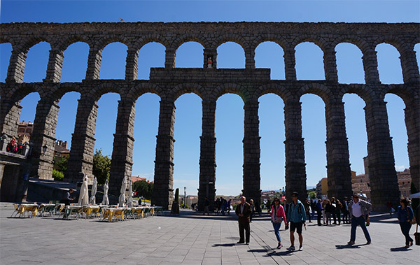
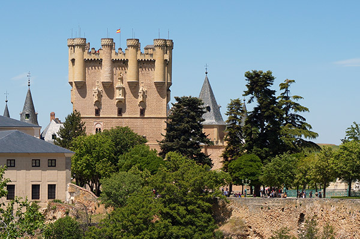

SEGOVIA (塞哥維亞)
Location
 西班牙中部城市，位於塞哥維亞省，卡斯蒂利亞-萊昂自治區，距馬德里西北方約70公里。
西班牙中部城市，位於塞哥維亞省，卡斯蒂利亞-萊昂自治區，距馬德里西北方約70公里。
從馬德里搭巴士，車程約1小時。
About
Segovia過去是羅馬帝國和卡斯提亞王國時期的軍事防守要塞，舊城區仍保留完整建築遺蹟，1985年塞哥維亞舊城及輸水道被列為世界文化遺產。Segovia景點間的距離步行即可抵達，相當適合一日遊行程。

Acueducto de Segovia (羅馬水道橋)
水道橋建於古羅馬時代，保存完好，據說仍能引水入城，現已停用。

Catedral de Segovia (塞哥維亞大教堂)
塞哥維亞大教堂始建於1525年，歷時200年竣工。是西班牙最晚落成的哥德式教堂，鐘樓高88米，是西班牙鐘樓之冠。
Alcazar de Segovia (阿爾卡薩爾城堡)
阿爾卡薩爾城堡在阿拉伯人統治時期就初具規模，後居住在這裡的歷代國王又屢次加以重建或擴建。迪士尼卡通《白雪公主》即是以此堡作為舞台背景。

後記
Segovia舊城區內也有很多美食，像是著名的烤乳豬，皮脆肉質多汁，值得一嚐！另外當地的傳統甜點Ponche segoviano（杏仁糖霜蛋糕），口味獨特，很甜，愛吃甜食的人可以一試。